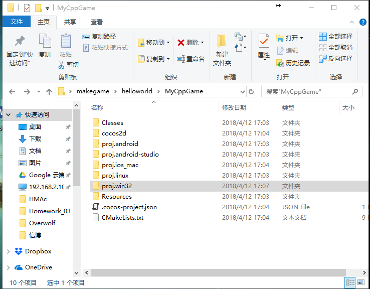
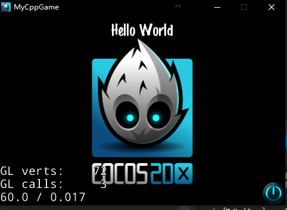

邁出打造自己的遊戲的第一步之cocos2d-x開發環境搭建
本文主要介紹開發遊戲的第一步，如何在Win10+Visaul Studio 2017的環境下安裝配置好一個遊戲引擎-cocos2dx來開發遊戲。
這裡是參考的英文原文鏈接
安裝好Cocos2d-x
在安裝Cocos2D-x之前，我們需要先安裝好其他一些軟件，這裡所有的例子都是在Win10+Visaul Studio 2017的環境下適用。
1 | C++ compiler --Visaul Studio 2017 |
download Python 2.7.x here.
安裝時記得勾選 增加系統環境變量，不然要自己手動添加。沒有添加的話在命令提示符中不能
使用 Python 的快捷命令，而需要寫完整路徑。
如果你需要在Android平台開發，你還需要下載 Android SDK, ANT and Android NDK ，這裡先不介紹，有時間另開新篇。
新建一個Cocos2d-x項目
首先打開命令提示符，cd 到 你下載的cocos2d-x的文件路徑下，輸入并執行
1
python setup.py
如果提示錯誤，找不到Python可能就是前文提到的沒有添加系統環境變量。執行后會提示你輸入Android SDK, ANT and Android NDK
這些的路徑，這裡我們沒有下載就enter跳過，之後下載后再運行一次。
然後輸入
1
cocos new -l cpp -p com.gamefromscratch.gamename -d C:\path\to\game\here gamename
-d 後面的部分替換為自己的遊戲要存放的路徑。
現在我們就能在自己建立好的路徑中找到建立好的項目（hopefully!）來看看裡面有些啥：

Getting start
點擊proj.win32文件夾裡面的.sln 文件，這回打開Visaul Studio,直接按綠色箭頭運行。
如果成功的話你就會看到HelloWorld了。

Hello World
现在让我们看一下最小的cocos2d-x应用程序。虽然cocos的新创建的项目创建了一个Hello World应用程序，但它是一个非常草率的起点。首先，它对应用程序来说是不必要的麻烦，它应该是一个最小的例子，它以一种只有Objective-C背景的才有看的懂的方式进行注释，它甚至使用了已經弃用的方法。
在此之前，我们将会看到一个更干净的Hello World样本。我们只需用下面提供的代码替换每个文件中的代码。不要担心，我们破解的所有功能都将在以后的教程中介绍。
我从默认实现中所做的最大的改变是只留下应用程序最基本的要求。你可能会注意到，我也用pragma once statements代替了 防衛式include聲明。